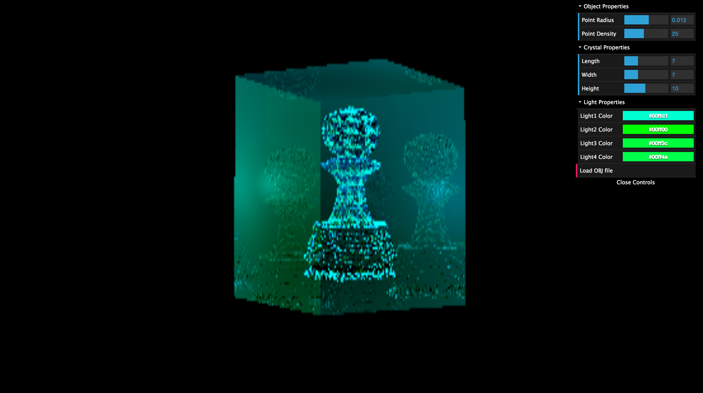
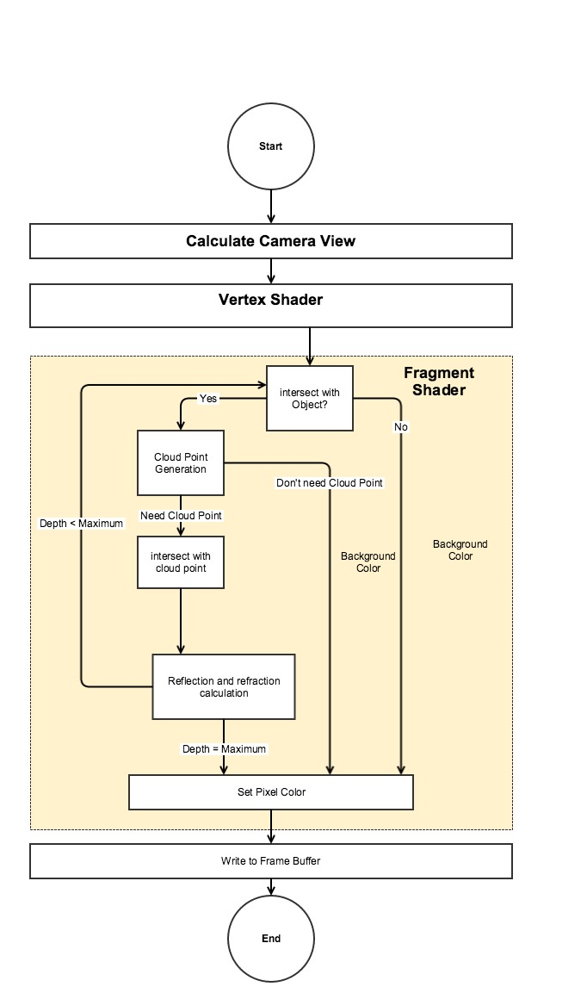

Abstract
Laser Etch is a popular and quick technology now. It is widely used in creating customized beautiful gifts. Therefore, a perfect simulation can provide a basic idea to customers about how the final product will look like. Moreover, it can promote customers'' buying willingness. The similar simulator we can find on the market is given the result as the left image at above. Our project focuses on creating a tool to simulate a better and real-time 3D Laser Etch product. The functions will include allowing users to upload their desired 3D model and getting the crystal laser etch simulation.
Algorithm and Method
To make the tool become useful, we are trying to implement it as a web application. Ray-tracing is our rendering environment because it is good for showing a transparent object. Therefore, the task is broken down into following works. First, we have to realize the basic ray-tracing program. We practiced it with C++. Second, we have to transfer the program into javascript to make it run on the browser and provide more interactions including loading OBJ file and adjusting scenes. We have to use WebGL to achieve realtime calculation. The objects information should be sent into the texture memory space in GPU since the shader programs are focused on applying ray-tracing algorithm on each pixel on the screen. In addition, since WebGL doesn’t allow recursive function exist, the solution we used is creating individual functions for each layer of light tree. The most significant part in our program is drawing an object with a set of cloud points. The algorithm is inspired by the section, generating random points in triangles, in “Graphics Gems” edited Andrew S. Glassner. It use barycentric coordination to get a point in a triangle base on the coordinates of three vertices. We make the algorithm generate equaly distributed points. The original idea to put the points, or tiny spheres, into the shader program was calculating the points outside of shader and sending them as objects into the program. However, the problem of it is, first, it is too exhausting to consider all the tiny spheres during calculating on pixel. Second, the texture memory is too less to put all these contents. Therefore, alternately, we only calculate the cloud points once a ray intersect with a specific triangle and check the intersection by using sphere intersection function among the points in this triangle. In this way, we can get a better performance.
Algorithm flow chart
1. Implement basic ray tracing by using c++
2. Simulate point cloud in matlab


3. Implement ray tracing by using webgl

4. Transform object to point cloud

Result
The render result without the cloud point


The render result with cloud point
Team
Chieh-I Chen (chiehich@usc.edu)
Yudong Yang (yudongya@usc.edu)
Chong Li (chongli@usc.edu)
Yawei Huang (yaweihua@usc.edu)
Reference
Ray-tracing: • http://web.cse.ohio-state.edu/~hwshen/681/Site/Slides_files/basic_algo.pdf • http://www.cs.utah.edu/~shirley/books/fcg2/rt.pdf • http://people.mozilla.org/~sicking/webgl/ray.html • http://www.flipcode.com/archives/Raytracing_Topics_Techniques-Part_1_Introduction.shtml • http://undernones.blogspot.com/2010/12/gpu-ray-tracing-with-glsl.html
Cloud Points: • GRAPHICS GEMS by ANDREW S. GLASSNER
WebGL: • WebGL Beginner's Guide by Diego Cantor Brandon Jones • https://github.com/frenchtoast747/webgl-obj-loader • http://math.hws.edu/eck/cs424/notes2013/19_GLSL.html • https://msdn.microsoft.com/en-us/library/ie/dn302341(v=vs.85).aspx
dat.Gui: • https://code.google.com/p/dat-gui/